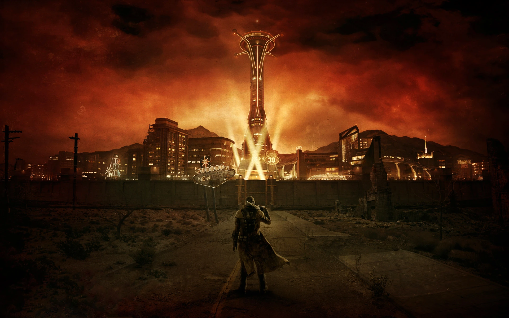
A Fallout New Vegas a 2077-es nukleáris csapásváltás (Great War) után 204 évvel játszódik, 2281-ben, a Mojave sivatagban, a mai napi Las Vegas környékén (mely a játékban a New Vegas nevet viseli). A játékos a Courier nevű karaktert irányítja, aki egy futár, és akit egy titokzatos támadás ér a játék elején. A területen a játék során egy hatalomért való harc zajlik. Nyugatról a New California Republic (NCR), keletről a Caesar's Legion, valamint New Vegas vezetője, Mr. House is fennhatóságot akar szerezni a területen. A játék során a játékos döntései befolyásolják, hogy ki kerül hatalomra a játék végére, és milyen sors vár a Mojave sivatag lakóira.
A játék elején, a bevezető film során a Courier-t egy támadás éri, melyben egy Benny nevű karakter fejbelövi és eltemeti a Goodsprings-i temetőben, ahonnan viszont egy Victor nevű robot kiássa. Az első fejezet arról szól, hogy a játékos megtalálja Benny-t és döntsön a sorsáról.
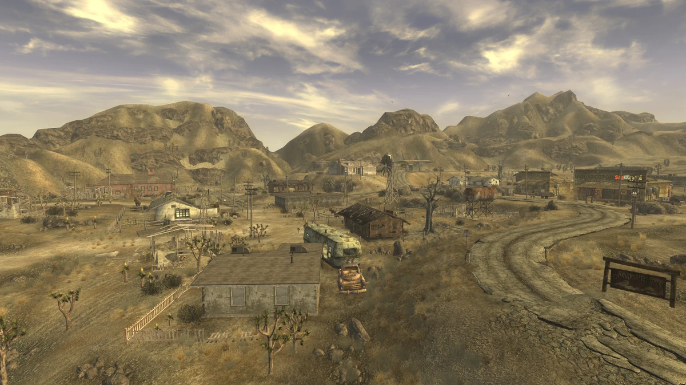
Goodsprings - Ain't That a Kick in the Head
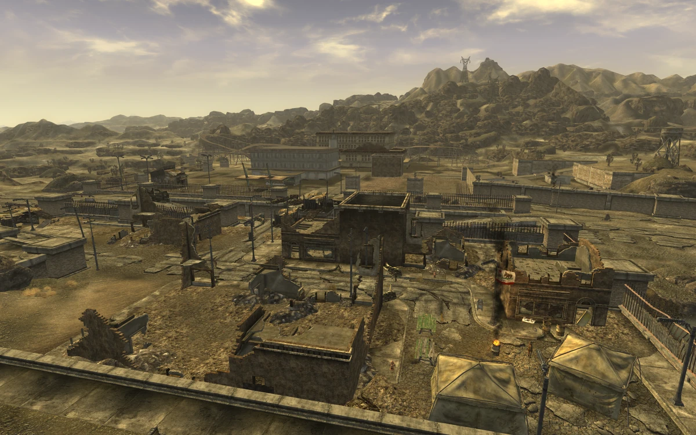
Primm - They Went That-a-Way
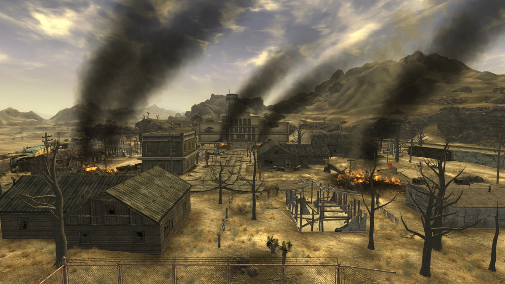
Nipton - They Went That-a-Way
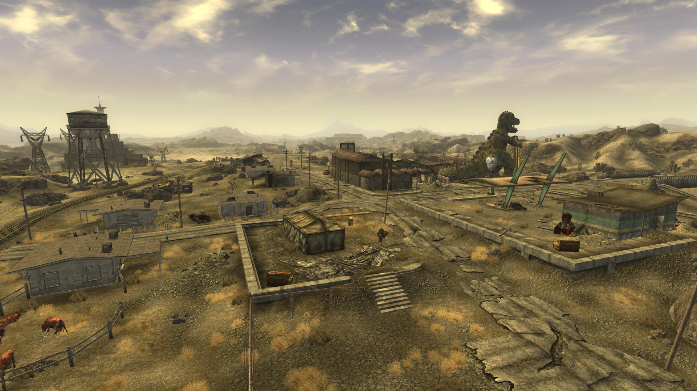
Novac - They Went That-a-Way
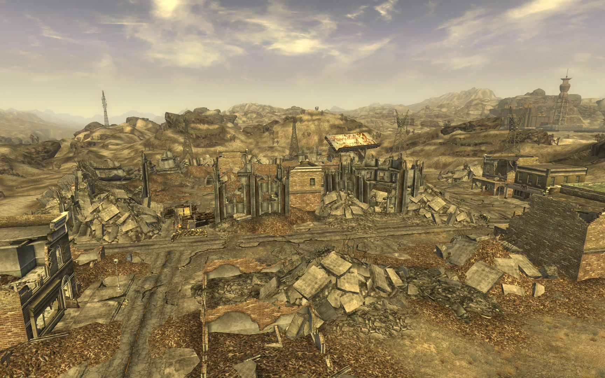
Boulder City - They Went That-a-Way
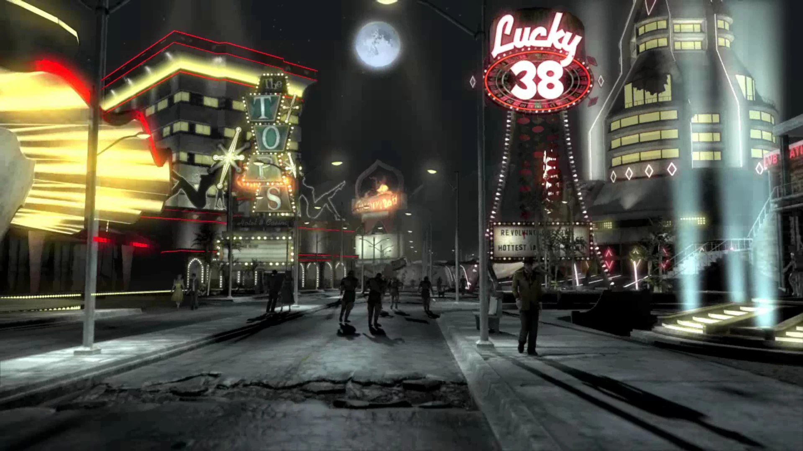
New Vegas - Ring-a-Ding-Ding!
A játék történetének második fejezete azután kezdődik, hogy a játékos megtalálta Benny-t és döntött a sorsáról. Ezután a területért harcoló csoportok mindegyike felkeresi a Courier-t, hogy igénybe vegye a segítségét. A játékosnak itt döntenie kell, hogy kinek az oldalán akarja tovább vinni a történetet, így a második fejezet menete nagyban függ ettől a dontéstől. A különböző történetvonalaknak vannak viszont közös pontjai is. Ebben a részben ezeket fogom röviden leírni.
Minden végigjátszás során a játékosnak a választott fő csoportjától függően különböző kisebb csoportokkal is kapcsolatba kell lépnie annak érdekében, hogy a segítségüket kérje a fő csoportok számára vagy elpusztítsa őket. Ezek a kisebb csoportok a következők:
A Boomerek egy elszigetelődési politikát folytató törzs, akik a Nellis Légierő Bázis területén élnek. Nagyrészt robbantó nehézfegyverzetet használnak. A játékosnak be kell jutnia a bázisukra, a bizalmukba kell férkőznie, majd vagy segítenie kell nekik, vagy minden tagjukat le kell mészárolnia. Ha a játékos segít nekik, akkor viszont az utolsó hozzájuk kapcsolódó küldetésben a Boomerek kihalásznak egy Boeing B-29 Superfortress nehézbombázót a Mead-tóból, és ezzel légitámogatást nyújtanak a játék fináléjában.
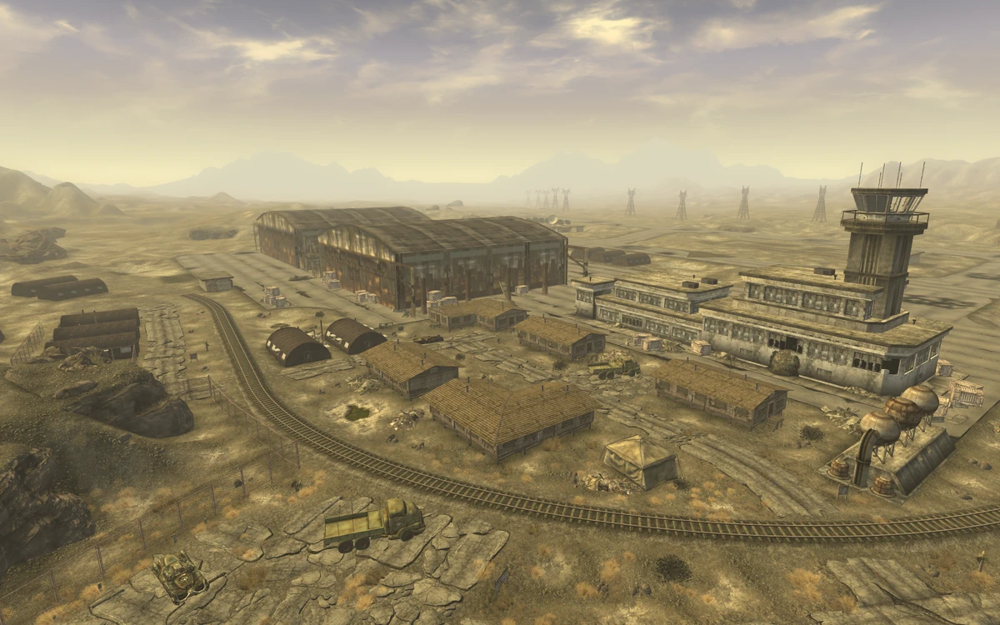
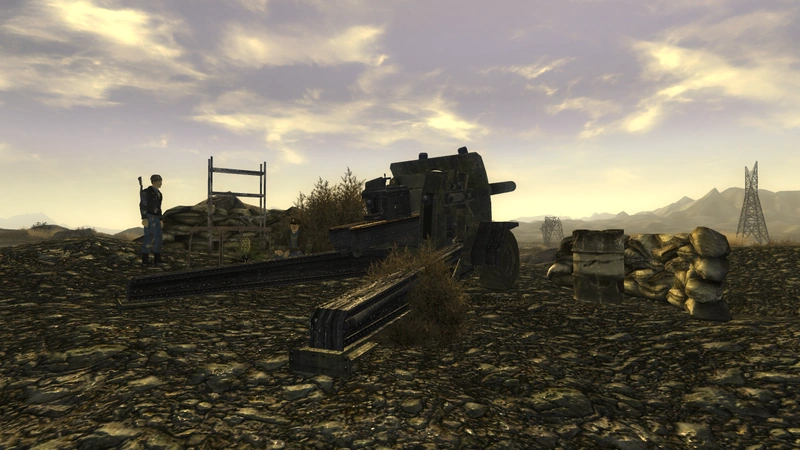
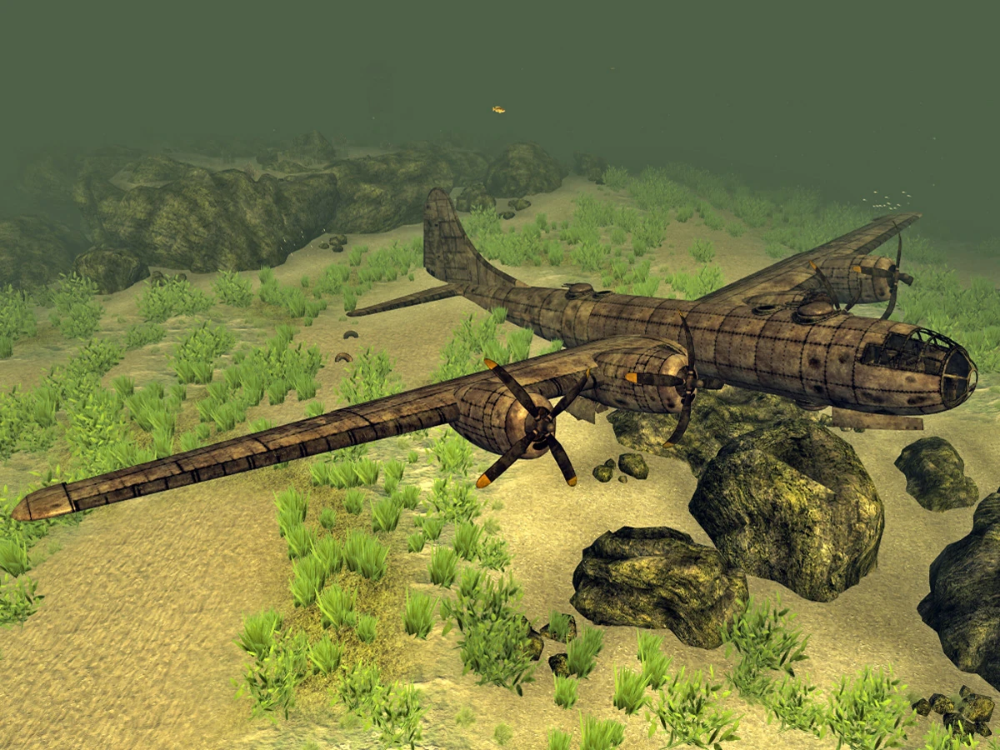
A Great Khans egy drogkereskedéssel foglalkozó törzs, akik a Mojave sivatag északnyugati részén, a Vörös Szikla Kanyonban (Red Rock Canyon) élnek. A játékos a választott csoportjától függően vagy kiírtja, száműzi őket, vagy beolvasztja őket egy bizonyos csoportba. Ha sikerül békés megoldást találni a Khanokkal, akkor harcosokként csatlakoznak a játékoshoz a fináléban, és segítenek a harcban. Ha viszont a játékos kiírtja őket, akkor a fináléban nem lesznek jelen.
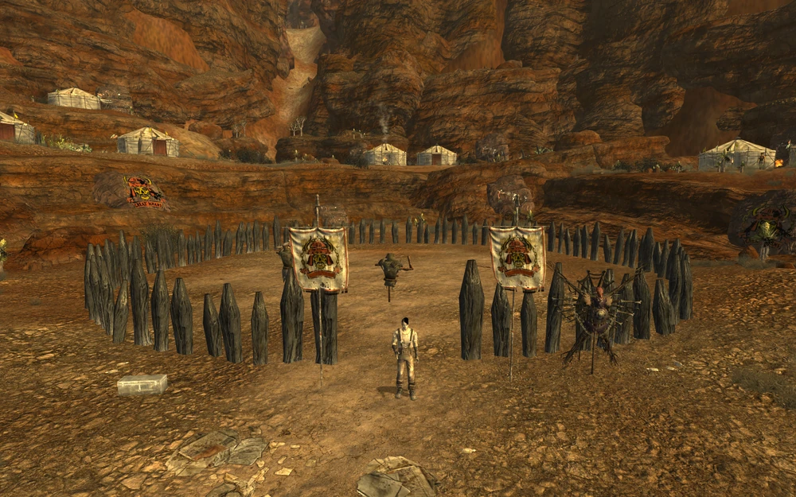
Az Omertas egy maffia jellegű csoport, akik a Gommorrah kaszinó tulajdonosai. A felszínen a csoport elég tisztának tűnik ha eltekintünk a kaszinóban és a kaszinó körüli területen zajló egyértelmű prostitúciótól, de Mr. House és az NCR orrai alatt fegyverkereskedelemmel és drogkereskedelemmel is foglalkoznak. A történetvonaluk során a játékosnak nyomoznia kell a fegyverkereskedelmi összeesküvésük után, majd döntést kell hozniuk ennek az üzletmodellnek a sorsáról. A játékos őket nem tudja teljesen kiírtani mint az előző kettőt, viszont meg tudják változtatni a vezetőségük felépítését.
Erről nincs kép, mivel az ilyestfajta dolgok nem alkalmasak iskolai megtekintésre.
A White Glove Society még egy New Vegas-i kaszinótulajdonos csoport, akik az Ultra-Luxe kaszinót működtetik. A felszínen ők is tisztának, talán egy picit szokatlannak tűnnek, viszont a felső vezetőség körében nagyon népszerű a kannibalizmus, a kannibál vacsorák. A játékos a történetvonaluk során eltörölheti a kannibál tendenciákat a kaszinóból, vagy elősegítheti ezeknek a vacsoráknak a tálalását friss célpontokkal. Ha a játékos maga egy kannibál, akkor speciális beszédopciókat is kapnak.
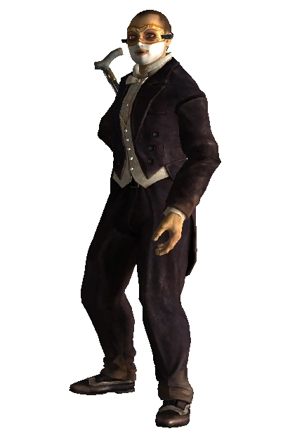
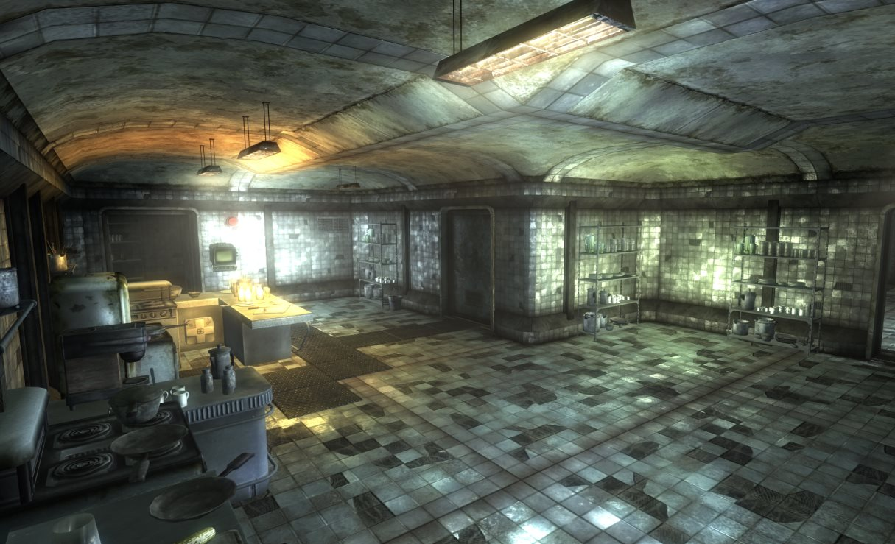
A Brotherhood of Steel egy technológiagyűjtő, elszigetelt csoport, akik a Rejtett Völgyben (Hidden Valley), egy bunkerben rejtőzködnek a rájuk vadászó NCR elől. Ők a legveszélyesebb kisebb csoport, mert a legtöbb katonájuk nehézpáncélt, Power Armour-t visel valamint fejlett fegyverzettel harcolnak. A játékosnak döntenie kell róla, hogy segít-e nekik kibékülni az NCR-rel és kijönni a bunkerből vagy megsemmisíti-e őket a bunker önmegsemmisító protokolljával.
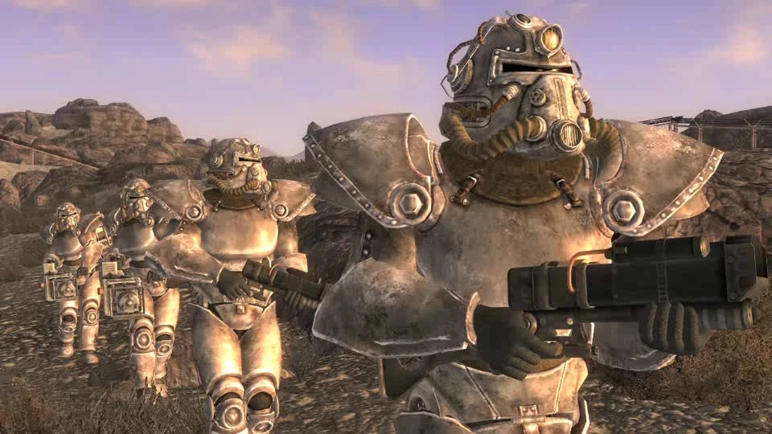
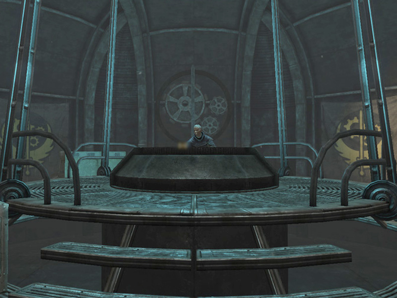
A játék vége felé, választott csoporttól függően a játékosnak vagy meg kell védenie az NCR elnökét, Aaron Kimball elnök urat Légiós orvvadászoktól, vagy meg kell ölnie őt Légiós orvvadászok segítségével. Ha a játékos Mr. House-t vagy Yes Man-t választja és nem elég pozitív a hírneve az NCR-rel, akkor a játékosnak nincs lehetősége részt venni ebben a küldetésben és a Légiós erők biztosan megölik az elnököt.
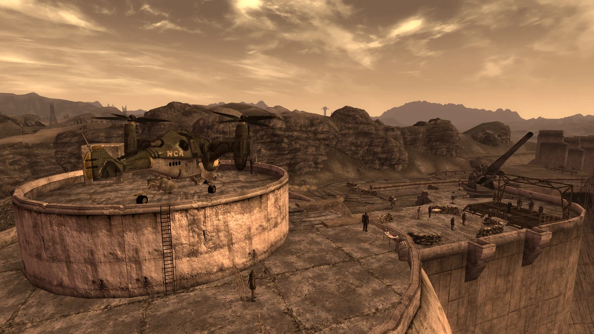
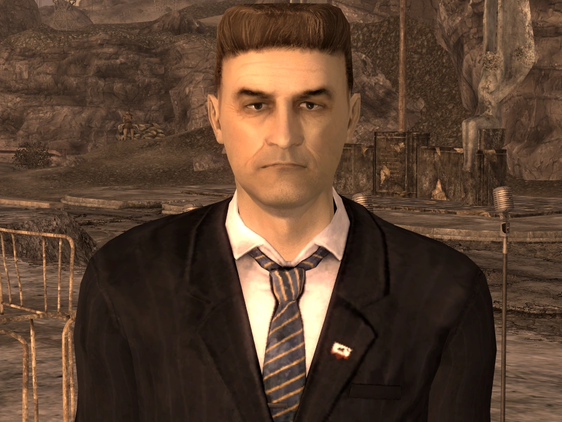
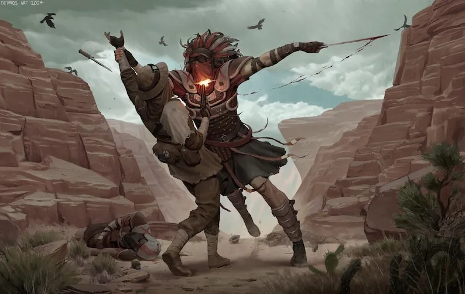
A fő csoportok között, legalábbis az Új Kaliforniai Köztársaság és a Császári Légió között egy véres háború folyik a Mojave sivatagért, pontosabban a Hoover Gát és New Vegas-ért, amely még a játékos megérkezése előtt elkezdődött. Egy nagyobb összeütközés történt ekkor, az Első Hoover Gáti Csata. Légiós erők, számbeli fölényükkel, lerohanták a gátot védő Köztársasági katonákat, és kezdetben úgy tűnt, hogy a Légió erői átsöpörnek a Mojave területein, viszont elit köztársasági kommandósok csapdát állítottak a Légiós erőknek a környező Boulder City területén. Amikor a Légió legjobbjai átkeltek a gáton és beléptek Boulder City területére miközben üldözték a visszavonuló Köztársaságiakat, a kommandósok előre beszerelt robbanószerekkel felrobbantották a város nagy részét, ezzel megsemmisítve az előrevonuló Légiósok nagy részét, viszont a Köztársasági erők is súlyos veszteségeket szenvedtek. Végül a Légiósok visszavonultak és a Köztársaságiak visszafoglalták a gátat. Mind a Légió, mind a Köztársaság készül a következő összecsapásra, mely a játék végén fog lezajlani, a Második Hoover Gáti Csata. A játékosnak a választott csoportjától függően kell részt vennie ebben a csatában. A játékosnak a csata során a Hoover Gát környékén kell harcolnia, és a csata kimenetele nagyban függ a játékos döntéseitől.
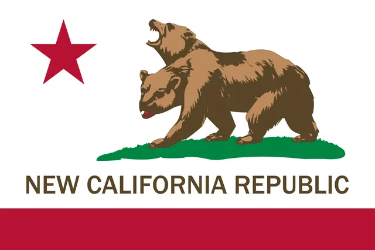
Az Új Kaliforniai Köztársaság egy demokratikus kormányzattal rendelkező állam, mely a Mojave sivatag nagy részét felügyeli, legalábbis hivatalosan. Az NCR kormánya korrupciós problémákkal küzd, nincs elég katonájuk és felszerelésük (vagy korrupt vezetők miatt ezek nem jutnak el oda, ahova kéne), valamint a területen állomásozó katonák morálja nem valami magas, ezért az általuk irányított területnek egy részét átvették a helyi bandák és törzsek, valamint Légiós ügynökök és katonák is fellelhetőek, nagyrészt a keleti határvidéken. A helyi lakossággal sincsenek tökéletes viszonyban, mivel a Köztársaság magas adókat vet ki a helyiekre, és az előbb említett bandatevékenységek miatt a helyiek szerint nem védik meg őket eléggé. A Köztársaság elnöke az Általános szekcióban is említett Aaron Kimball elnök úr, aki lehetséges, hogy a Köztársaságbeli korrupciót elősegítette azzal, hogy nem korlátozta a helyi úgynevezett "Brahmin Bárókat" (Brahmin Barons), akik állattartással és kereskedelemmel meggazdagodot cégek vezetői, és nagy mértékben beleszólnak a Köztársasági politikába politikusok megvesztegetésével és a gazdasági fonotosságukkal. A helyi katonai erők Lee Oliver tábornok irányítása alatt vannak. Mr. House irányítása alatt lévő New Vegasban van egy nagykövetük, Dennis Crocker néven. Tőle kapod az első küldetést, melyben a New Vegas Strip körüli Freeside-i bandával kell tárgyalnod a helyi Köztársasági katonák védlme érdekében. A Hoover gáti erők parancsnoka Cassandra Moore ezredes. Tőle kapod a kisebb csoportokkal kapcsolatos küldetéseket, az elnöki beszédhez kapcsolódó küldetést, valamint a Hoover gáti csata küldetést is. A Köztársaságra később a játékban utalnak "a Medve" (the Bear) néven is, mivel a Köztárasaság zászlaján egy mutált, kétfejű medve látható, mely manapság is Kalifornia állam jelképe (viszont csak egy fejjel). A Köztársaság ellenséges viszonyban áll a Császár Légiójával, a helyi bandák többségével, az Omerta családdal, és semleges / enyhén barátságos viszonyban van Mr. House rezsimjével.
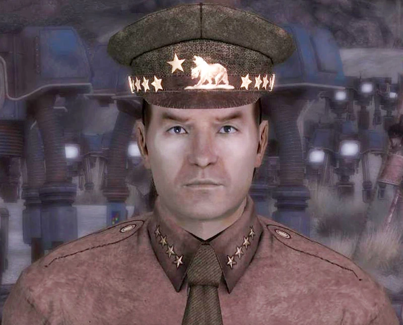
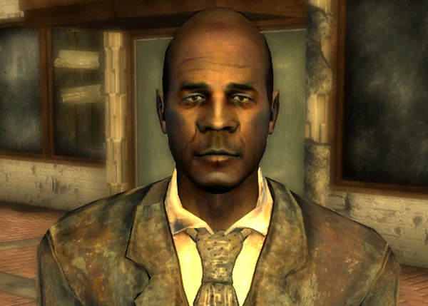
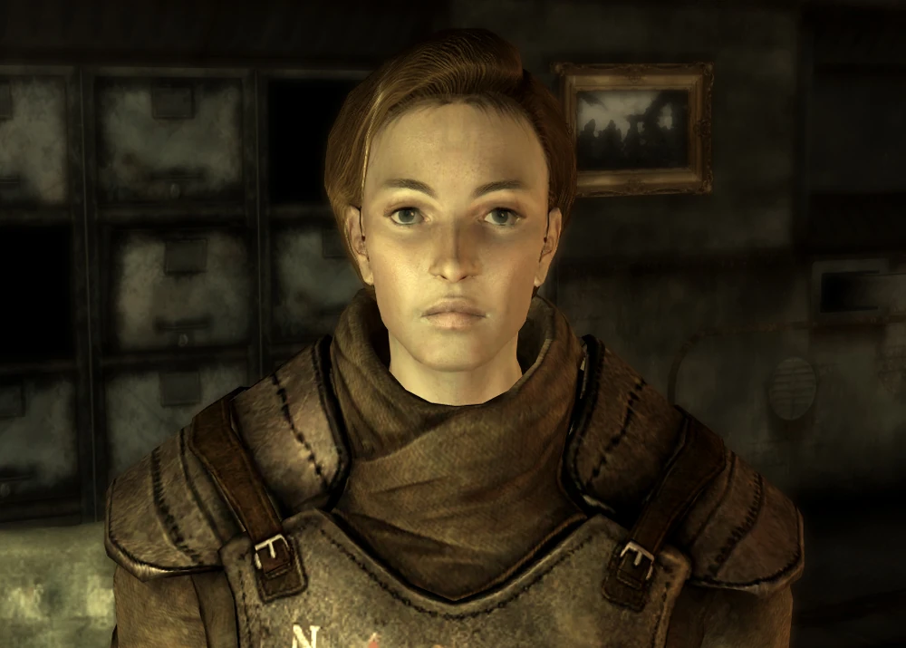

A Császári Légió egy totalitárius, militarista diktatúra, melyet Caesar (született Edward Sallow) vezet. A Légió a Római Birodalom mintájára szerveződött, és a Mojave sivatag keleti részén, a Colorado folyó mentén terjeszkedik. A Légió hírhedt a kegyetlenségéről, rabszolgaságáról és a hadviselés brutalitásáról. Az állam 87, korábban meghódított törzsból áll. Úgy terjeszkednek, hogy a meghódított népek tagjainak vagy asszimilálódniuk kell a Légióba, vagy rabszolgaként kell szolgálniuk, vagy a Légió kivétel nélkül kivégzi őket. A brutalitásuk miatt a helyi bandák nem mernek ellenszegülni nekük (vagy már kiírtotta őket a Légió), így szövetségeseket is szereztek a helyi kétségbeesett lakosok körében. Ezt az is megsegíti, hogy a Légió beleférkőzött a Köztársaság területeire az elit titkosügynökei által, a Frumentarius-sal. A Frumentarii vezetője Vulpes Inculta, aki egészen a Déli NCR Határellenőrzőpont melletti Nipton városáig eljut katonáival, akik a helyi lakosságot kiírtják egy ember kivételével. Minden helyinek adtak egy lottószelvényt, és csak az sétálhatott el élve, aki nyert. Aki nem nyert, azt viszont vagy gyorsan kivégeztét, vagy keresztre feszítették. A Légió fő hadseregi parancsnoka Legátus Lanius, aki a keleti hóditásaitól visszatér nyugatra a Második Hoover Gáti Csatáért, mivel az előző legátust, akinek nem sikerült elfoglalnia a gátat, Legátus Malpaist élve elégették és ledobták egy hegyről. A Légió rossz viszonyban van szinte mindenkivel a Coloradotól nyugatra, viszont kevésbé aggresszívak velük szemben a bandák.
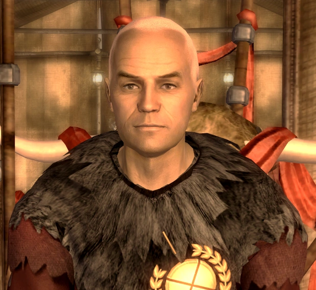
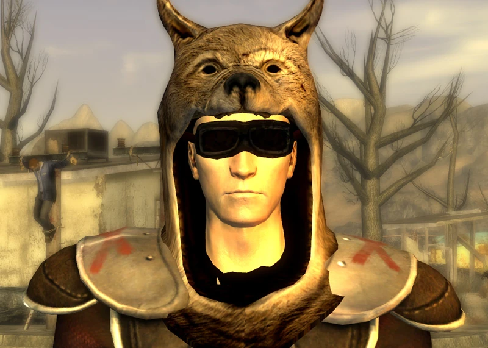
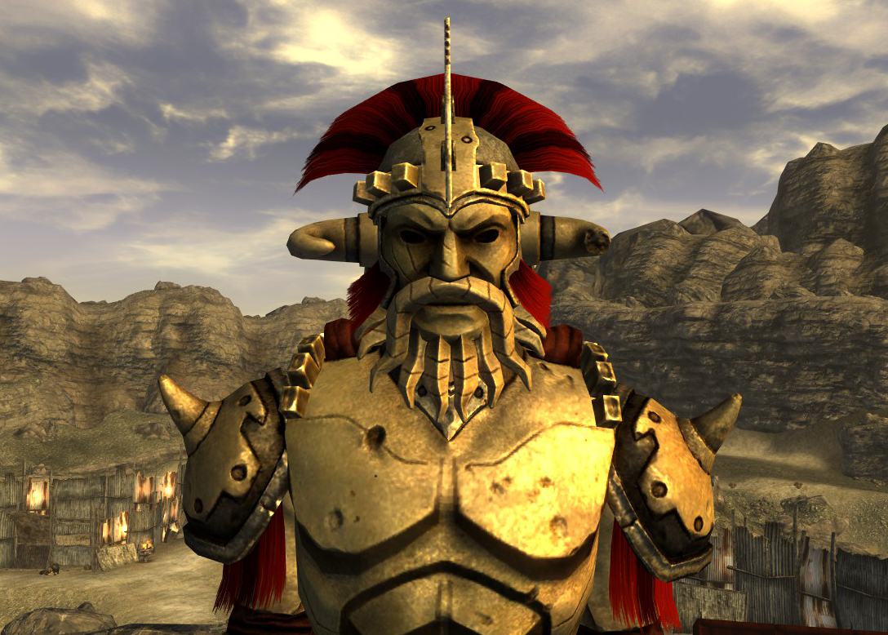
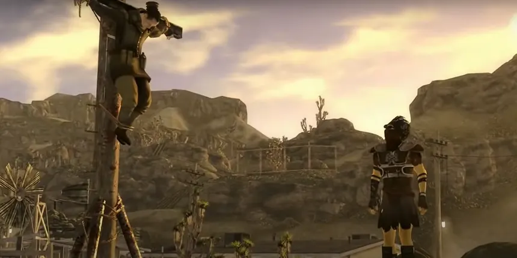
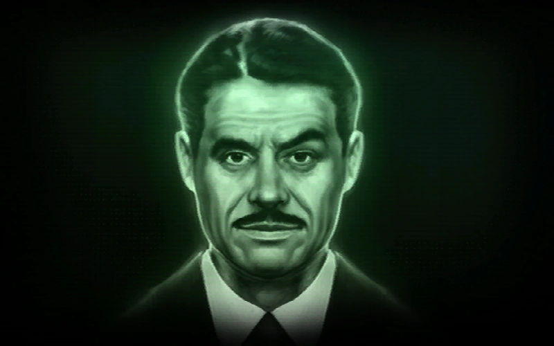
Mr. House New Vegas és a New Vegas körüli területek irányítója. Mr. House a játékossal egy képernyőn keresztül beszél, mivel Ő egy háború előtti üzletember, akinek az irányítása alatt volt a RobCo cég, mely az univerzum Amerikai származású robotjainak a túlnyomó részét készítette. Mivel Ő a játék idejében már több, mint 300 éves, ezért egy életfenntartó rendszerekkel felszerelt kapszulában él. Egy diktatorikus rendszert használ, melyben az Ő szava érvényesül minden felett, viszont megengedi a New Vegas-i kaszinócsaládoknak a kaszinóik független működését egészen addig, amíg ellene nem fordulnak. Mr. House a játék elején a technológiailag legfejlettebb csoport, mivel a háború előtt fejlett légvédelmi hálózatot épitett fel Vegas körül, mely megóvta a városközpontot a helyi atomcsapásoktól. Hadseregét teljes egészében robotok teszik ki, melyeket a játékos felfejleszt egy fejlettebb operációs rendszerrel, ha úgy dönt, hogy Mr. House mellett játsza végig a játékot. Ez az új operációs rendszer feloldja a robotok irányított rakétaindítóit, ezzel sokkal effektívebbek lesznek. A robotokat "Securitron"-nak hívják.
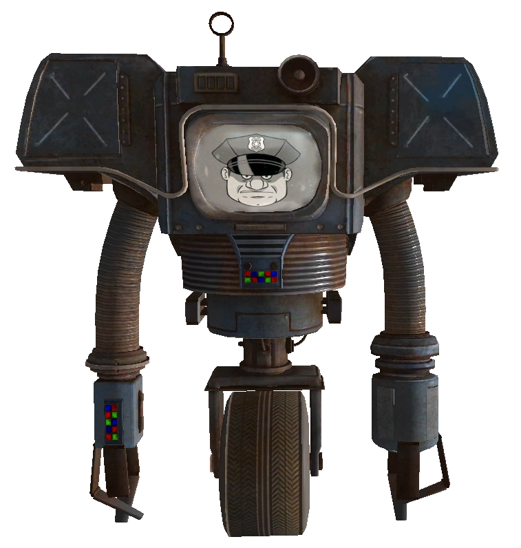
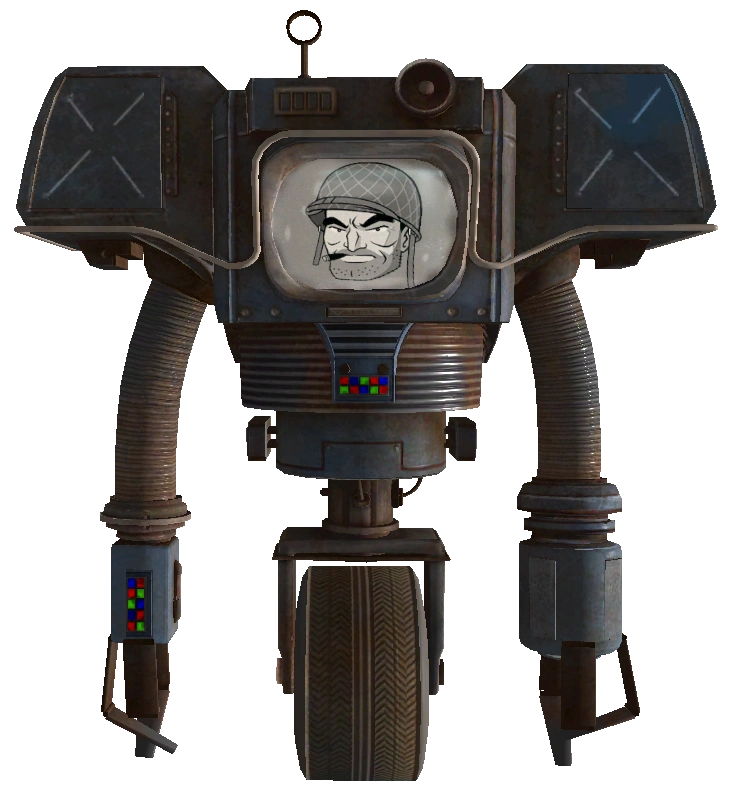
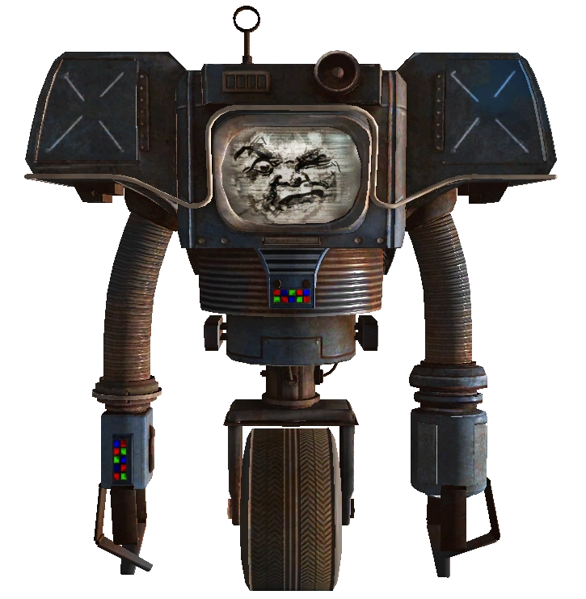
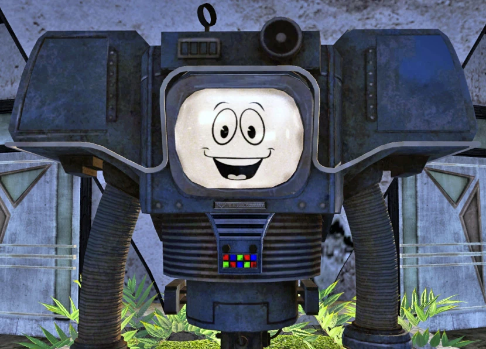
Yes Man az egy Benny által készített robot, mely nagyon segítőkész. és ha a játékos úgy dönt, segíthet neked átvenni a hatalmat a Mojave felett. Ő játékmeneti szempontból azért készült, hogy akkor is végig tud vinni a játékot, ha magadra haragítod a másik csoportokat, így nincsenek különleges küldetései, csak Mr. House küldetéseit játszod végig egy más név alatt. Yes Man az egyik küldetésben átveszi Mr. House helyét.
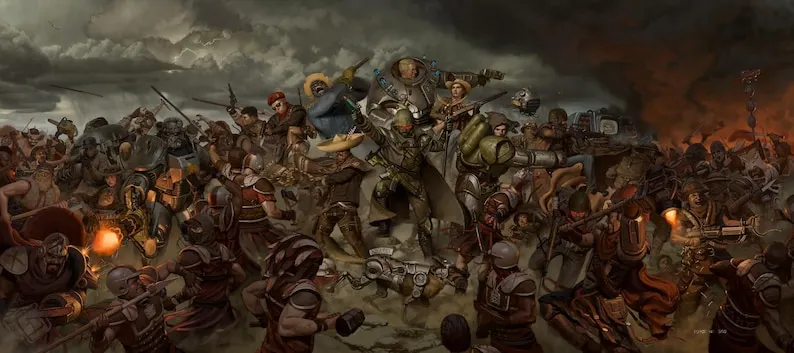
Minden fő csoportnak az utolsó küldetése a Második Hoover Gáti Csatától szól. A Köztársaság, Mr. House és Yes Man a gát nyugati oldaláról kezdenek, míg a Légió a keletin. Ebben a csatában részt vesznek a kisebb csopotok is, ha a játékos a segítésük mellett dönt. Például a Boomerek a megjavított nehézbombázójukkal szőnyegbombázzák az ellenséges felet. A többi kisebb csoportok nagyrészt gyalogos katonákat küldenek. Ha a játékos a Köztársaságot támogatta, akkor a játékosnak át kell jutnia a gát keleti felén lévő Légiós bázisra, ahol vagy meg kell győznie Legátus Lanius-t arra, hogy tegye le a fegyvert, vagy meg kell ölnie. A Légiónál ez pont fordítva van, ők keletről vonulnak nyugatra és a játékosnak Oliver Lee tábornokot kell meggyőznie. Mr. House-zal és Yes Man-nel a nyugatról keletre vonulás közben még át kell vennie a Hoover Gátat a Köztársasági erőktől is, majd le kell számolnia Legátus Lanius-szal, valamint Oliver Lee tábornokkal is. A korabeli konzolos limitációk (2010) miatt a csata nem akkora, mint amekkorának az Obsidian Interaktív kezdetben akarta, viszont szerintem még mindig egy jó küldetés.